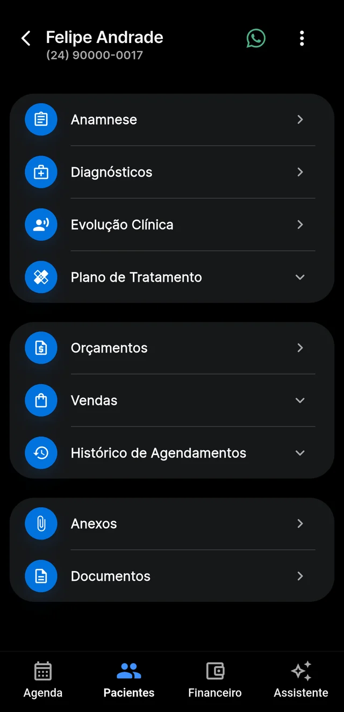
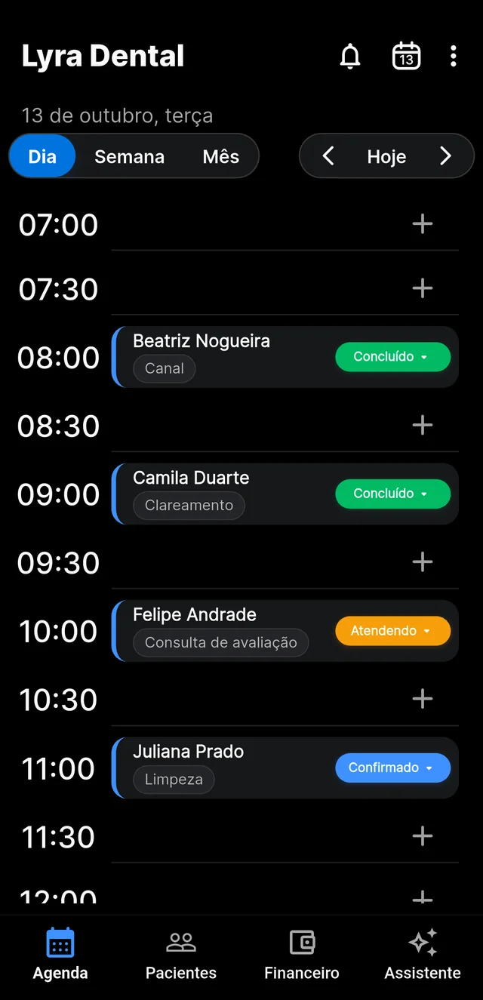
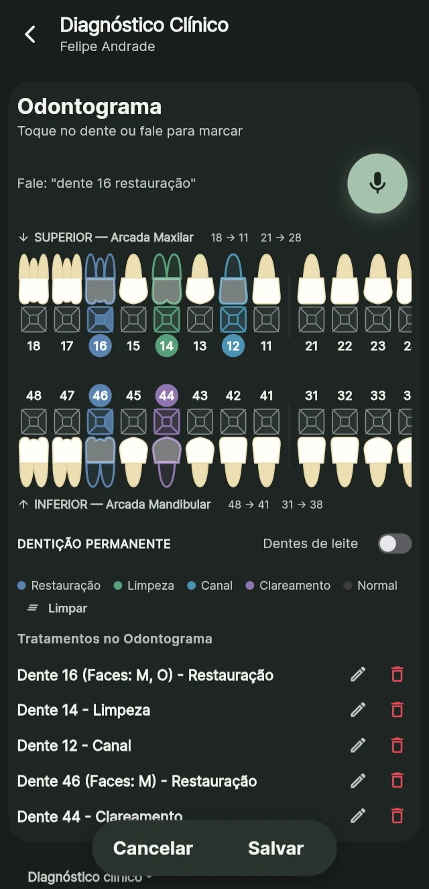
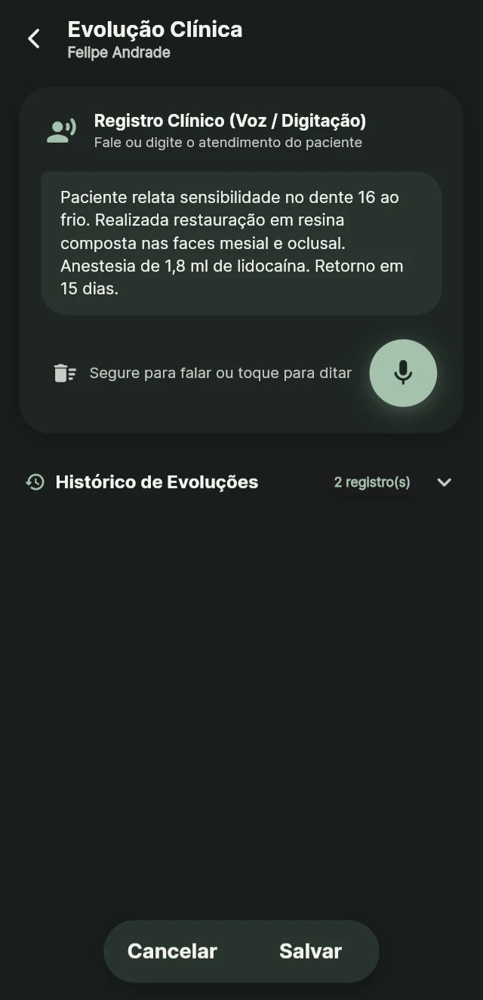
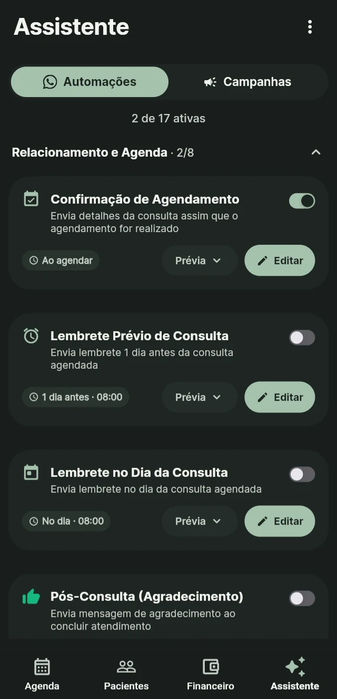

WhatsApp automático
Confirma consultas, envia lembretes e responde dúvidas comuns sem você precisar fazer tudo manualmente.
Automatize o WhatsApp, organize sua agenda e use sua voz para registrar a evolução clínica e marcar o odontograma. Tudo em um só lugar.
Confirma consultas, envia lembretes e responde dúvidas comuns sem você precisar fazer tudo manualmente.
Organize seus horários e acompanhe a rotina do consultório em uma agenda simples e prática.
Diga o dente e o procedimento. O Lyra registra, organiza e facilita a criação do orçamento.
Descreva o atendimento com sua voz e transforme sua fala em uma evolução clínica organizada.
Veja o dia inteiro de relance, marque horários com um toque e acompanhe cada atendimento, do agendado ao concluído. Quando o paciente confirma pelo WhatsApp, a agenda atualiza o status para você.
Demonstração ilustrativa.
Conte como foi o atendimento, do seu jeito. O Lyra transforma sua fala em um registro clínico organizado, com pontuação e linguagem odontológica.
Demonstração ilustrativa.
Toque no microfone e diga o dente e o procedimento. O Lyra seleciona o dente, registra o tratamento e deixa tudo organizado para você montar o orçamento.
Demonstração ilustrativa.
O Lyra responde perguntas frequentes usando as informações da sua clínica, envia confirmações e lembretes de consultas e avisa sua equipe quando é necessário atendimento humano.
A conexão é feita lendo um QR Code, e o uso do WhatsApp segue as regras do próprio WhatsApp.
HOJE
Oi, qual o horário de vocês?08:12
Olá, bom dia! Atendemos de segunda a sexta, das 8h às 18h. 😊08:12
Quero marcar uma consulta para amanhã.08:13
↪ Sua equipe é avisada e continua a conversa
Exemplo ilustrativo de conversa.
Agenda, pacientes, documentos e financeiro organizados em um só lugar, para facilitar a rotina do seu consultório.
Organize horários, atendimentos e compromissos com facilidade.
Tenha anamnese, histórico clínico, evolução e documentos organizados.
Registre dentes e procedimentos falando, com tudo organizado para o orçamento.
Crie receitas, atestados, declarações e pedidos de exames.
Monte orçamentos e acompanhe as movimentações financeiras do consultório.
Organize o trabalho dos dentistas da clínica em um só sistema.





O Lyra foi desenvolvido junto com uma dentista que vive a rotina do consultório todos os dias. Cada recurso nasce de necessidades reais, para tornar a gestão mais simples e o atendimento mais prático.
Informações clínicas são sensíveis. Por isso, a proteção dos dados faz parte da estrutura do Lyra.
Cada clínica acessa apenas seus próprios registros, com acesso individual e dados separados.
O áudio é enviado por conexão segura ao serviço de transcrição e não fica armazenado no Lyra.
É um software e app de gestão para dentistas e clínicas odontológicas: agenda inteligente, WhatsApp automático para confirmar consultas, odontograma e evolução clínica por voz, tudo em um só lugar.
A evolução por voz transforma sua fala em texto para o prontuário. O odontograma por voz marca o dente e o procedimento por comando e organiza a lista de tratamentos do paciente.
Foi desenhado para ser simples no celular, com poucas telas e ações diretas. Se tiver dúvida, fale com a gente.
Hoje o Lyra tem aplicativo para Android e uma versão web, que funciona no navegador do computador.
Ainda não. Está nos nossos planos, mas sem data definida.
Sim, lendo um QR Code. O Lyra responde as perguntas comuns com os dados da sua clínica e chama sua equipe quando precisa. O uso segue as regras do próprio WhatsApp.
Ele confirma e lembra os pacientes pelo WhatsApp. No lembrete vai um link em que o paciente confirma, pede para remarcar ou cancela, e você vê o resultado na agenda e recebe o aviso no app.
O áudio é enviado por conexão segura a um serviço de transcrição e não fica salvo no Lyra. A gravação para sozinha após um tempo de silêncio e tem limite de duração.
Os dados ficam na nuvem, protegidos por login e separados entre as clínicas. Você também pode fazer backup.
Sim. Cada profissional tem a sua visão da agenda dentro da mesma clínica.
Não. O Lyra funciona na nuvem e precisa de conexão. Em troca, seus dados ficam sempre atualizados no celular e no computador.
Estamos em fase de lançamento, com condições especiais para os primeiros clientes. Fale com a gente pelo WhatsApp e passamos os valores atualizados.
Converse com nossa equipe pelo WhatsApp, conheça o aplicativo e descubra como ele pode facilitar sua rotina.
Falar pelo WhatsAppPrecisa de ajuda?Fale com quem criou o Lyra.
Quem criou o Lyra é quem atende você. Surgiu um problema ou uma dúvida? Fale direto com a gente, sem robô.
Sobre o que você quer falar?
Você será levado ao WhatsApp.